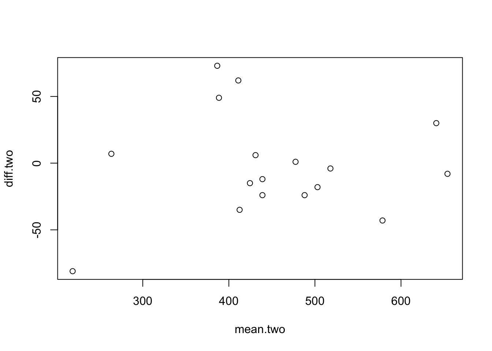
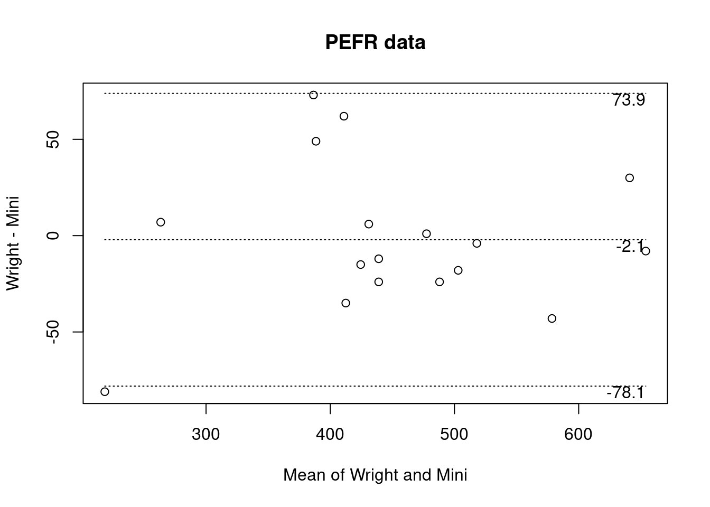
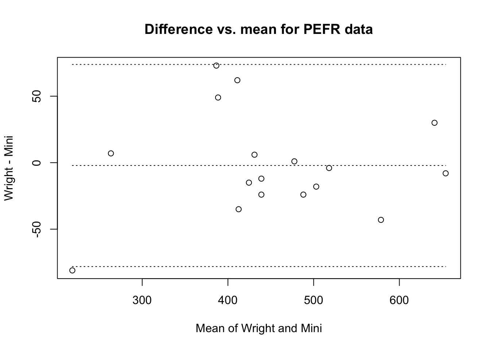

Exercise 7 Writing your own graphical functions
R provides a pretty full set of graphical functions for plotting data as well as plot() methods for a wide variety of statistical functions. There will be times, however, when you will need to write you own graphical functions to present and analyse data in a specific way. In this exercise we will create a function that produces a plot that may be used for assessing agreement between two methods of clinical measurement as described in:
Bland JM, Altman DG. Statistical Methods for Assessing Agreement Between Two Methods
of Clinical Measurement. The Lancet. 1986;1: 307–310. Which involves plotting the difference of two measurements against the mean of the two measurements and calculating and displaying limits of agreement.
Start R and retrieve and attach the sample dataset:
ba <- read.table("ba.dat", header = TRUE)
attach(ba)## The following objects are masked from ba (pos = 11):
##
## Mini, Wright## The following objects are masked from ba (pos = 19):
##
## Mini, Wright
The ba data.frame contains measurements (in litres per minute) taken with a Wright peak flow meter and a Mini-Wright peak flow meter. This is the same data that is presented in the referenced Lancet article:
## Wright Mini
## 1 494 512
## 2 395 430
## 3 516 520
## 4 434 428
## 5 476 500
## 6 557 600
## 7 413 364
## 8 442 380
## 9 650 658
## 10 433 445
## 11 417 432
## 12 656 626
## 13 267 260
## 14 478 477
## 15 178 259
## 16 423 350
## 17 427 451
You can examine the ba data.frame using the print() and summary() functions:
print(ba)
ba
summary(ba)## Wright Mini
## 1 494 512
## 2 395 430
## 3 516 520
## 4 434 428
## 5 476 500
## 6 557 600
## 7 413 364
## 8 442 380
## 9 650 658
## 10 433 445
## 11 417 432
## 12 656 626
## 13 267 260
## 14 478 477
## 15 178 259
## 16 423 350
## 17 427 451## Wright Mini
## 1 494 512
## 2 395 430
## 3 516 520
## 4 434 428
## 5 476 500
## 6 557 600
## 7 413 364
## 8 442 380
## 9 650 658
## 10 433 445
## 11 417 432
## 12 656 626
## 13 267 260
## 14 478 477
## 15 178 259
## 16 423 350
## 17 427 451## Wright Mini
## Min. :178.0 Min. :259.0
## 1st Qu.:417.0 1st Qu.:380.0
## Median :434.0 Median :445.0
## Mean :450.4 Mean :452.5
## 3rd Qu.:494.0 3rd Qu.:512.0
## Max. :656.0 Max. :658.0
The function() function allows us to create new functions in R:
ba.plot <- function(a, b) {}
This creates an empty function called ba.plot() that expects two parameters called a and b. We could type the whole function in at the R command prompt but it is easier to use a text editor:
fix(ba.plot)
We will start be writing a basic function which we will gradually improve throughout this exercise.
Edit the ba.plot() function to read:
function(a, b) {
mean.two <- (a + b) / 2
diff.two <- a - b
plot(mean.two, diff.two)
}
Once you have made the changes shown above, check your work, save the file, and quit the editor.
The function calculates the mean and the difference of the two measures and then plots the results. Lets try the
ba.plot() function with the test data:
ba.plot(Wright, Mini)
The resulting plot is rather plain and lacks meaningful titles and axis labels. Use the fix() function to edit the ba.plot() function:
fix(ba.plot)
Edit the function to read:
function(a, b, title = "Bland and Altman Plot") {
a.txt <- deparse(substitute(a))
b.txt <- deparse(substitute(b))
x.lab <- paste("Mean of", a.txt, "and", b.txt)
y.lab <- paste(a.txt, "-", b.txt)
mean.two <- (a + b) / 2
diff.two <- a - b
plot(mean.two, diff.two, xlab = x.lab, ylab = y.lab, main = title)
}
Once you have made the changes shown above, check your work, save the file, and quit the editor.
We have added a new parameter (title) to the function and given this a default value of Bland and Altman Plot. Adding title as a parameter means that we will be able to specify a title for the plot when we call the function. We have also used the function combination deparse(substitute()) to retrieve the names of the vectors passed to parameters a and b. The paste() function pastes pieces of text together. It is used here to create the text for the axis labels used with the plot() function.
Lets try the ba.plot() function with the test data:
ba.plot(Wright, Mini)
We may also specify a title for the plot using the title parameter:
ba.plot(Wright, Mini, title = "PEFR data")
We can now edit the function to calculate and plot mean, difference, and the limits of agreement. Use the fix() function to edit the ba.plot() function:
fix(ba.plot)
Edit the function to read:
function(a, b, title = "Bland and Altman Plot") {
a.txt <- deparse(substitute(a))
b.txt <- deparse(substitute(b))
x.lab <- paste("Mean of", a.txt, "and", b.txt)
y.lab <- paste(a.txt, "-", b.txt)
mean.two <- (a + b) / 2
diff.two <- a - b
plot(mean.two, diff.two, xlab = x.lab, ylab = y.lab, main = title)
mean.diff <- mean(diff.two)
sd.diff <- sd(diff.two)
upper <- mean.diff + 1.96 * sd.diff
lower <- mean.diff - 1.96 * sd.diff
lines(x = range(mean.two), y = c(mean.diff, mean.diff), lty = 3)
lines(x = range(mean.two), y = c(upper, upper), lty = 3)
lines(x = range(mean.two), y = c(lower, lower), lty = 3)
}
Once you have made the changes shown above, check your work, save the file and quit the editor.
We have used the mean() and sd() functions to calculate the mean and standard deviation of the difference between the two measures and calculated the limits of agreement (upper and lower) assuming that the differences are Normally distributed.
The lines() function is then used to plot the mean and the limits of agreement on top of the existing scatter plot.
The parameter lty = 3 used with the lines() function specifies dotted lines.
R provided a great number of graphical parameters that can be used to customise plots. You can see a list of
these parameters using:
help(par)
These parameters can be specified for almost all graphical functions.
Lets try the ba.plot() function with the test data:
ba.plot(Wright, Mini, title = "Difference vs. mean for PEFR data")
The function is almost complete. All that remains to do is to label the lines with the values of the mean difference and the limits of agreement.
Use the fix() function to edit the ba.plot() function:
fix(ba.plot)
Edit the function to read:
function(a, b, title = "Bland and Altman Plot") {
a.txt <- deparse(substitute(a))
b.txt <- deparse(substitute(b))
x.lab <- paste("Mean of", a.txt, "and", b.txt)
y.lab <- paste(a.txt, "-", b.txt)
mean.two <- (a + b) / 2
diff.two <- a - b
plot(mean.two, diff.two, xlab = x.lab, ylab = y.lab, main = title)
mean.diff <- mean(diff.two)
sd.diff <- sd(diff.two)
upper <- mean.diff + 1.96 * sd.diff
lower <- mean.diff - 1.96 * sd.diff
lines(x = range(mean.two), y = c(mean.diff, mean.diff), lty = 3)
lines(x = range(mean.two), y = c(upper, upper), lty = 3)
lines(x = range(mean.two), y = c(lower, lower), lty = 3)
m.text <- round(mean.diff, digits = 1)
u.text <- round(upper , digits = 1)
l.text <- round(lower, digits = 1)
text(max(mean.two), mean.diff, m.text, adj = c(1,1))
text(max(mean.two), upper, u.text, adj = c(1,1))
text(max(mean.two), lower, l.text, adj = c(1,1))
}
Once you have made the changes shown above, check your work, save the file, and quit the editor.
We have used the round() function to limit the display of the mean difference and the limits of agreement to one decimal place and used the text() function to display these (rounded) values. The adj parameter to the text() function controls the position and justification of text.
Let’s try the ba.plot() function with the test data:
ba.plot(Wright, Mini, title = "PEFR data")
The graphical function is now complete.
One improvement that we could make is for the function to produce a chart and return the values of the mean difference and the limits of agreement.
We would do this in exactly the same way as we would with a non-graphical function. We would return the mean difference and the limits of agreement as members of a list.
We could also specify a class for the returned list and create a class specific print() function (or method) to produce nicely formatted output.
Use the fix() function to edit the ba.plot() function:
fix(ba.plot)
Edit the function to read:
function(a, b, title = "Bland and Altman Plot") {
a.txt <- deparse(substitute(a))
b.txt <- deparse(substitute(b))
x.lab <- paste("Mean of", a.txt, "and", b.txt)
y.lab <- paste(a.txt, "-", b.txt)
mean.two <- (a + b) / 2
diff.two <- a - b
plot(mean.two, diff.two, xlab = x.lab, ylab = y.lab, main = title)
mean.diff <- mean(diff.two)
sd.diff <- sd(diff.two)
upper <- mean.diff + 1.96 * sd.diff
lower <- mean.diff - 1.96 * sd.diff
lines(x = range(mean.two), y = c(mean.diff, mean.diff), lty = 3)
lines(x = range(mean.two), y = c(upper, upper), lty = 3)
lines(x = range(mean.two), y = c(lower, lower), lty = 3)
m.text <- round(mean.diff, digits = 1)
u.text <- round(upper , digits = 1)
l.text <- round(lower, digits = 1)
text(max(mean.two), mean.diff, m.text, adj = c(1,1))
text(max(mean.two), upper, u.text, adj = c(1,1))
text(max(mean.two), lower, l.text, adj = c(1,1))
ba <- list(mean = mean.diff, limits = c(lower, upper))
class(ba) <- "ba"
return(ba)
}
Once you have made the changes shown above, save the file and quit the editor.
Create a print() function for objects of the ba class:
print.ba <- function(x) {}
Use the fix() function to edit the new function:
fix(print.ba)
Edit the function to read:
function(x) {
cat("Mean difference : ", x$mean, "\n",
"Limits of agreement : ", x$limits[1], "; ", x$limits[2], "\n",
sep = "")
}
Once you have made the changes shown above, check your work, save the file, and quit the editor.
Let’s try the ba.plot() function with the test data:
ba.plot(Wright, Mini, title = "PEFR data")
## Mean difference : -2.117647
## Limits of agreement : -78.0973; 73.86201
The function produces the plot and returns the mean difference and limits of agreement as a list of class ba which is formatted and printed by the print.ba() function.
We can manipulate the returned values just as we would with any other function:
ba.test <- ba.plot(Wright, Mini)
print(ba.test)
ba.test
ba.test$mean
ba.test$limits
ba.test$limits[1]
ba.test$limits[2]
## Mean difference : -2.117647
## Limits of agreement : -78.0973; 73.86201## Mean difference : -2.117647
## Limits of agreement : -78.0973; 73.86201## [1] -2.117647## [1] -78.09730 73.86201## [1] -78.0973## [1] 73.86201
You might like to use the save() function to save the ba.plot() and print.ba() functions before quitting R.
We can now quit R:
q()
For this exercise there is no need to save the workspace image so click the No or Don’t Save button (GUI) or enter n when prompted to save the workspace image (terminal).
7.1 Summary
Rallows you to create functions that produce graphical output.Rallows you to create functions that produce graphical output and return values.Robjects can be assigned a class or type.Rallows you to create new classes and class-specific functions that can extract and manipulate data common to the new classes.Classes allows you to create versatile functions that return values when we need them to return values but can also produce formatted output when we need them to produce formatted output.
Classes allow you to write functions that can be chained together so that the output of one function is the input of another function.